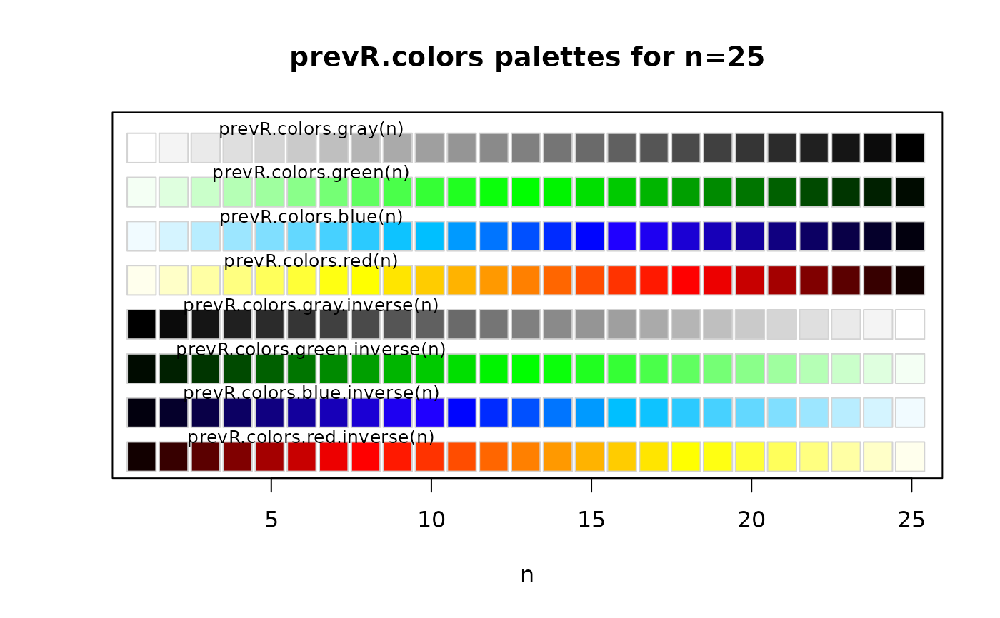

Functions generating color palettes usable with R graphical functions.
These palettes are continuous, contrast being accentuated by darkening
and lightening extreme values. prevR.demo.pal plot the available
palettes. prevR.colors.qgis.pal export a palette in a text file
readable by Quantum GIS, an open-source mapping software.
Usage
prevR.colors.blue(n = 10)
prevR.colors.blue.inverse(n = 10)
prevR.colors.gray(n = 10)
prevR.colors.gray.inverse(n = 10)
prevR.colors.green(n = 10)
prevR.colors.green.inverse(n = 10)
prevR.colors.red(n = 10)
prevR.colors.red.inverse(n = 10)
prevR.demo.pal(n, border = if (n < 32) "light gray" else NA, main = NULL)
prevR.colors.qgis.pal(file, at, pal = "red", inverse = FALSE)Value
prevR.demo.pal() plot the color palettes.
prevR.colors.qgis.pal() export a color palette in a text file readable
by Quantum GIS.
The other functions return a list of colors coded in hexadecimal.
Details
prevR.colors.red() produces a color gradation from white/yellow
to red/dark red.
prevR.colors.blue() produces a color gradation from light blue
to dark blue.
prevR.colors.green() produces a color gradation from light green
to dark green.
prevR.colors.gray() produces a color gradation from white/light gray to
dark gray/black.
Functions with a suffix .inverse produce the same color gradation, but from dark colors to light ones.
Note
To obtain the list of colors in RGB (Red/Green/Blue), use the function
grDevices::col2rgb().
The code of prevR.demo.pal() was adapted from the function demo.pal
presented in the examples of grDevices::rainbow().
See also
Other color palettes are available in R. See for example
grDevices::rainbow() or the package RColorBrewer.
Examples
prevR.demo.pal(25)

prevR.colors.red(5)
#> [1] "#FFFF80" "#FFFF00" "#FF8000" "#FF0000" "#800000"
col2rgb(prevR.colors.red(5))
#> [,1] [,2] [,3] [,4] [,5]
#> red 255 255 255 255 128
#> green 255 255 128 0 0
#> blue 128 0 0 0 0
if (FALSE) { # \dontrun{
prevR.colors.qgis.pal("palette.txt", seq(0, 25, length.out = 100), "red")
} # }